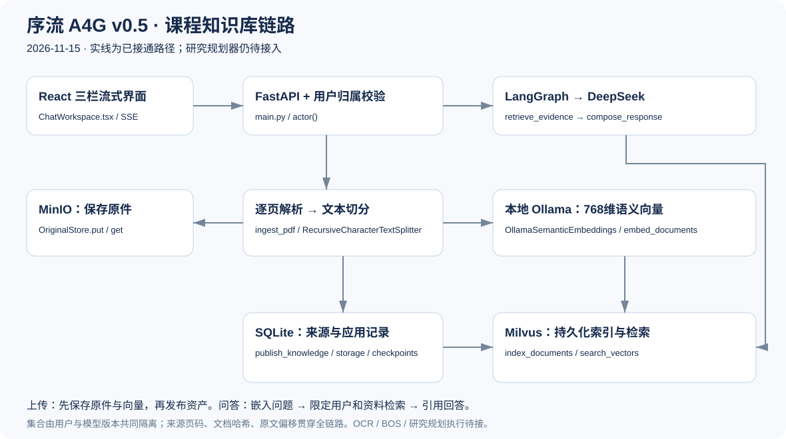

已实测2026-11-15。打开工作台 · 操作手册 · 验证报告

upload / upload_pdf → OriginalStore.put → 切分与来源元数据 → publish_knowledge → embed_documents → index_documents → 标记ready。retrieve_evidence → rag.search → embed_query → search_vectors（用户与资料过滤）→ compose_response → SSE → ChatWorkspace。original_pdf → owned_asset → OriginalStore.get。研究显式规划仍待接。
路径相对 /Users/zz/Desktop/A4G；行号来自本轮源码静态解析。大纲仅导航，职责见系统架构图.md。
| 源码路径 | 类 / 函数 | 行号 |
|---|---|---|
| src/backend/app/documents.py | OriginalStore | 8 |
| src/backend/app/documents.py | OriginalStore.__init__ | 9 |
| src/backend/app/documents.py | OriginalStore.put | 11 |
| src/backend/app/documents.py | OriginalStore.get | 20 |
| src/backend/app/documents.py | OriginalStore.client | 26 |
| src/backend/app/documents.py | ingest_pdf | 31 |
| src/backend/app/embeddings.py | EmbeddingUnavailable | 9 |
| src/backend/app/embeddings.py | OllamaSemanticEmbeddings | 11 |
| src/backend/app/embeddings.py | OllamaSemanticEmbeddings.__init__ | 12 |
| src/backend/app/embeddings.py | OllamaSemanticEmbeddings._embed | 24 |
| src/backend/app/embeddings.py | OllamaSemanticEmbeddings.embed_query | 45 |
| src/backend/app/embeddings.py | OllamaSemanticEmbeddings.embed_documents | 46 |
| src/backend/app/embeddings.py | _semantic | 49 |
| src/backend/app/embeddings.py | get_embeddings | 51 |
| src/backend/app/embeddings.py | embedding_info | 56 |
| src/backend/app/rag.py | embed | 24 |
| src/backend/app/rag.py | LocalCharacterEmbeddings | 33 |
| src/backend/app/rag.py | LocalCharacterEmbeddings.embed_query | 34 |
| src/backend/app/rag.py | LocalCharacterEmbeddings.embed_documents | 37 |
| src/backend/app/rag.py | chunk | 39 |
| src/backend/app/rag.py | _documents | 41 |
| src/backend/app/rag.py | publish_knowledge | 53 |
| src/backend/app/rag.py | add_document | 76 |
| src/backend/app/rag.py | vector_store_label | 94 |
| src/backend/app/rag.py | search | 97 |
| src/backend/app/repositories/milvus.py | collection_name | 5 |
| src/backend/app/repositories/milvus.py | _client | 8 |
| src/backend/app/repositories/milvus.py | _id | 12 |
| src/backend/app/repositories/milvus.py | index_documents | 16 |
| src/backend/app/repositories/milvus.py | delete_documents | 27 |
| src/backend/app/repositories/milvus.py | search_vectors | 33 |
| src/backend/app/course_status.py | inspect_stack | 4 |
| src/backend/app/main.py | lifespan | 27 |
| src/backend/app/main.py | headers | 37 |
| src/backend/app/main.py | actor | 45 |
| src/backend/app/main.py | Body | 52 |
| src/backend/app/main.py | Login | 55 |
| src/backend/app/main.py | login | 62 |
| src/backend/app/main.py | logout | 77 |
| src/backend/app/main.py | me | 83 |
| src/backend/app/main.py | health | 86 |
| src/backend/app/main.py | configuration | 89 |
| src/backend/app/main.py | knowledge_status | 110 |
| src/backend/app/main.py | assets | 115 |
| src/backend/app/main.py | Upload | 118 |
| src/backend/app/main.py | upload | 124 |
| src/backend/app/main.py | owned_asset | 140 |
| src/backend/app/main.py | asset_detail | 145 |
| src/backend/app/main.py | download | 150 |
| src/backend/app/main.py | seed | 156 |
| src/backend/app/main.py | TaskInput | 171 |
| src/backend/app/main.py | serialize_task | 178 |
| src/backend/app/main.py | create_task | 185 |
| src/backend/app/main.py | tasks | 211 |
| src/backend/app/main.py | conversation | 215 |
| src/backend/app/main.py | owned_task | 218 |
| src/backend/app/main.py | task_detail | 224 |
| src/backend/app/main.py | cancel | 227 |
| src/backend/app/main.py | trace | 239 |
| src/backend/app/main.py | Question | 246 |
| src/backend/app/main.py | ask | 251 |
| src/backend/app/main.py | Vision | 266 |
| src/backend/app/main.py | vision | 271 |
| src/backend/app/main.py | admin_summary | 289 |
| src/backend/app/main.py | PdfUpload | 299 |
| src/backend/app/main.py | upload_pdf | 304 |
| src/backend/app/main.py | original_pdf | 312 |
| src/backend/app/upstream/graph.py | parse_intent | 11 |
| src/backend/app/upstream/graph.py | confirm_entities | 29 |
| src/backend/app/upstream/graph.py | collect_missing_fields | 38 |
| src/backend/app/upstream/graph.py | retrieve_evidence | 50 |
| src/backend/app/upstream/graph.py | clarify | 57 |
| src/backend/app/upstream/graph.py | compose_response | 60 |
| src/backend/app/upstream/graph.py | finalize_contract | 82 |
| src/backend/app/upstream/graph.py | build_upstream_graph | 93 |
| src/backend/app/upstream/service.py | upstream_events | 8 |
| src/backend/app/llm.py | ModelUnavailable | 5 |
| src/backend/app/llm.py | completion | 8 |
| src/backend/app/llm.py | json_content | 36 |
| src/backend/app/llm.py | langchain_completion | 42 |
| src/backend/app/llm.py | stream_completion | 72 |
| src/backend/app/streaming.py | ChatInput | 11 |
| src/backend/app/streaming.py | encode | 17 |
| src/backend/app/streaming.py | chat_events | 19 |
| src/backend/app/streaming.py | build_stream_router | 58 |